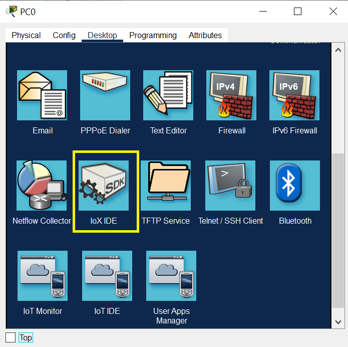
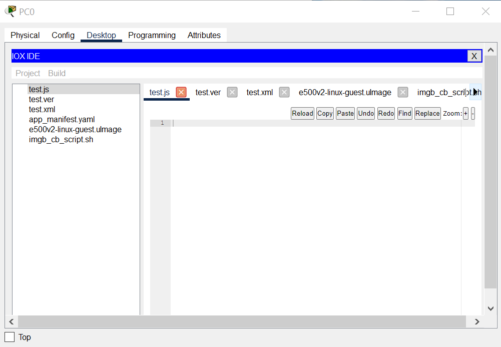

IOS and IOx
Cisco IOS Software is the world's leading network infrastructure software, delivering a seamless integration of technology innovation,
business-critical services, and hardware platform support. Currently operating on millions of active systems, ranging from the small home office router
to the core systems of the world's largest service provider networks, Cisco IOS Software is the most widely leveraged network infrastructure software in the world.
Cisco IOx is an application environment that is used by businesses ranging from manufacturing and energy corporations to public sector organizations
such as cities and transportation authorities that use IoT technologies to produce effective business outcomes.
Cisco IOx It is built on Linux and provides a distributed software architecture that moves many operating system responsibilities out of the IOS process
and has a copy of IOS running as a separate process.
IOx IDE App (on PC)
This app provides the ability to program Python with IOx IDE on the PC.

